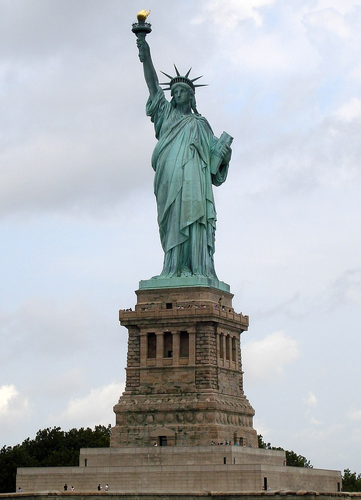

| Destination | Attraction |
|---|---|
| Paris | |
| Rome | |
| New York |  |
The Eiffel Tower is an iconic iron structure located in Paris, France. Built in 1889, it stands 324 meters tall and attracts millions of visitors every year. It offers breathtaking views of the city and is a symbol of French culture and engineering. The tower is especially beautiful when illuminated at night.
The Colosseum is an ancient amphitheater in Rome, Italy, and one of the greatest works of Roman architecture. Completed around 80 AD, it hosted gladiatorial contests and public spectacles. Visitors can explore its massive interior and imagine the history of Roman entertainment. It is a UNESCO World Heritage site and a symbol of ancient Rome.
The Statue of Liberty, located on Liberty Island in New York Harbor, is a symbol of freedom and democracy. Gifted by France in 1886, it stands 93 meters tall including its pedestal. Visitors can take a ferry to the island and climb to the crown for panoramic views. The statue welcomes millions of immigrants and tourists each year.